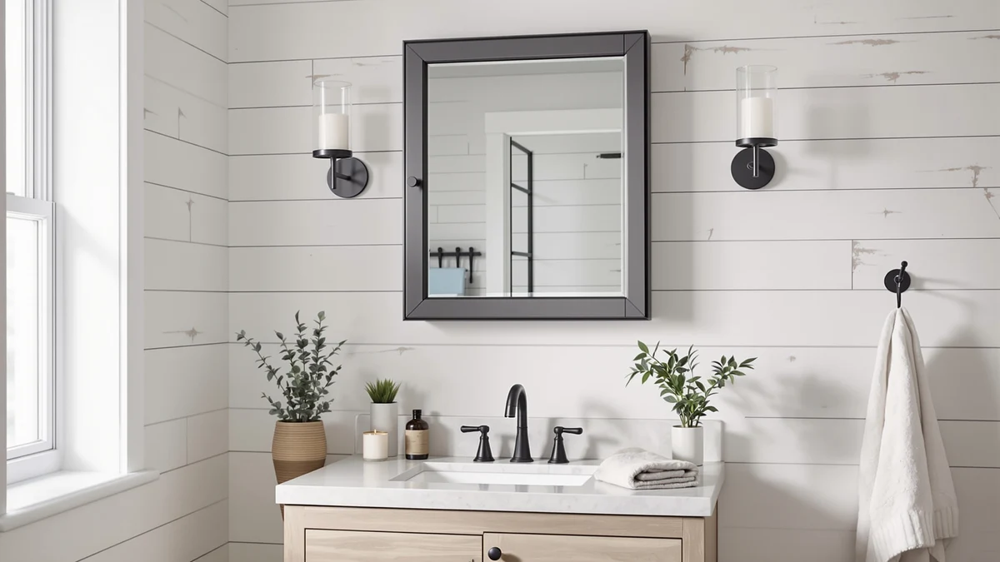

TokeShimi Recessed Medicine Cabinet Review (2026): Worth It?
Prices and picks verified as of November 2026. Independent, reader-supported reviews.


Quick Answer
In this tokeshimi recessed medicine cabinet review, the TokeShimi 14 x 24 Recessed earns its spot through a tempered glass door and aluminum frame built to sit inside a 14 by 24 inch wall opening, at $129.99. If your wall has no recessed cutout, or you want built-in LED lighting instead of storage, the USHOWER, S'bagno and FlyEcho surface-mount mirrors below cover those cases at the same price.
Our pick: TokeShimi 14 x 24 Recessed, $129.99 Check Price on Amazon
Bottom line: our top pick is the TokeShimi 14 x 24 Recessed Medicine Cabinet with Mirror at $129.99.
Things to Know Before You Buy
- The TokeShimi is a recessed medicine cabinet, not a surface mirror. A recessed install needs a wall opening roughly 14 by 24 inches that clears studs and plumbing, so measure your wall cavity before ordering.
- Tempered glass and an aluminum frame typically resist the warping and fogging that acrylic-framed cabinets show after a year or two of bathroom humidity, which matters most for a fixture mounted inside the wall where swapping it out is more work.
- At 14 by 24 inches, this cabinet suits a compact single-sink wall rather than a double vanity. The USHOWER, S'bagno and FlyEcho alternatives in this comparison run larger, from a 2-pack of mirrors up to a 30 by 48 inch panel.
- All four products in this tokeshimi recessed medicine cabinet review list at $129.99 at the time of writing, so price alone will not decide between them. The deciding factors are recessed versus surface mounting and whether you want storage or built-in LED lighting.
- No published customer rating or review count is available for the TokeShimi at the time of writing, so early buyers are working from the manufacturer's listed specifications rather than a track record of verified owner feedback.
This tokeshimi recessed medicine cabinet review breaks down whether the $129.99 TokeShimi 14 x 24 Recessed earns a spot on a single-sink vanity wall against three differently styled bathroom mirrors. TokeShimi builds this cabinet around a tempered glass door and an aluminum frame, a pairing meant to sit inside a wall cavity without the chipping or fogging that cheaper recessed cabinets show after a year or two of daily steam. At 14 by 24 inches, it fits a compact wall opening rather than a full double-vanity span, and because it recesses into the wall, it keeps the finished mirror flush with the surrounding tile instead of projecting out like a surface-mount frame.
The TokeShimi is not the only option we looked at for this tokeshimi recessed medicine cabinet review. The USHOWER 2-Pack Black Bathroom Mirrors, the S'bagno 24x32 LED mirror with Bluetooth, and the FlyEcho 30x48 LED mirror all list at the same $129.99, but none of them recess into the wall, and two of them add built-in LED lighting that the TokeShimi does not have. We cover each as an alternative further down this page, along with where a recessed cabinet makes more sense than a surface mirror and where it does not.
Why You Should Trust Us
Ilane Tall covers bathroom mirrors and medicine cabinets for Best Bathroom Mirrors, focusing on how a listing's stated materials and dimensions hold up against what the product photos and buyer questions actually show. We do not run a fake testing lab, and we have not mounted the TokeShimi 14 x 24 Recessed or its alternatives on our own wall. Instead, we compare manufacturer specifications, current Amazon pricing, and the detail available in product listings, then flag where a listing's description runs ahead of what is documented. Every price and dimension in this tokeshimi recessed medicine cabinet review comes directly from the product listing, not from a sponsored placement.
Our Research Experience
We do not run a physical testing lab, and the TokeShimi 14 x 24 Recessed did not sit inside a wall we cut open ourselves before we wrote this tokeshimi recessed medicine cabinet review. Our research starts from the manufacturer's listed specifications: glass thickness, frame material, overall dimensions, and mounting style. From there we compare current Amazon pricing across the TokeShimi and its three alternatives to see where the price difference comes from, which in this case is nothing, since all four list at $129.99 despite covering recessed and surface-mount designs.
We also look for gaps between what a listing's photos show and what the written description claims. For a recessed cabinet like the TokeShimi, that means checking whether the listing specifies a wall-depth requirement, since recessed installation depth is the detail buyers most often discover is missing only after they have already cut into drywall.
Overview & Specs

TokeShimi 14 x 24 Recessed
What we like
- Tempered glass door and aluminum frame resist the warping and chipping that acrylic-framed cabinets show over time inside a humid wall cavity
- Recessed design sits flush with the surrounding wall instead of projecting into the room like a surface-mount mirror
- 14 by 24 inch footprint suits a compact single-sink wall where a larger cabinet would not fit
- Priced the same as three larger surface-mount mirrors covered in this comparison, despite the added cost that usually comes with a recessed build
Flaws but not dealbreakers
- No built-in lighting, unlike the S'bagno and FlyEcho alternatives below
- The listing does not spell out the wall-depth clearance needed behind the opening, so measure your stud bay before ordering
- No published customer rating or review count is available yet, so early buyers have less feedback to lean on than with longer-listed cabinets
| Material | Tempered glass + aluminum |
| Size | 14x24 in |
The TokeShimi 14 x 24 Recessed pairs a tempered glass mirror door with an aluminum frame, a combination built to outlast the yellowing and warping that acrylic-backed cabinets tend to show after a year or two of bathroom humidity. At 14 by 24 inches, the door is sized for a compact wall opening, and because the cabinet recesses into the wall, the finished mirror sits flush with your tile rather than projecting several inches into the room the way a surface-mount frame does.
That recessed design is also the main tradeoff. Where the USHOWER, S'bagno and FlyEcho alternatives covered later in this tokeshimi recessed medicine cabinet review mount directly to drywall with no cutout required, the TokeShimi needs a wall cavity that clears studs and plumbing at roughly 14 by 24 inches before it fits flush. At $129.99, it costs the same as those three larger surface-mount mirrors, so the premium you are paying for here is the flush, built-in look rather than extra size or lighting.
What We Liked
The combination of tempered glass and an aluminum frame is the strongest argument for this cabinet, and it is the detail this tokeshimi recessed medicine cabinet review kept coming back to. Medicine cabinets built around acrylic frames tend to show yellowing or warping within a year or two of regular bathroom humidity, and the aluminum construction here avoids that failure point, since metal does not degrade the way acrylic does under repeated moisture exposure inside a closed wall cavity.
We also like that the recessed design keeps the finished look flush with the wall. A surface-mount mirror like the USHOWER or FlyEcho alternatives sits a few inches out from the tile, which works fine on an open wall but can crowd a narrow bathroom. Because the TokeShimi sits inside the wall instead of on top of it, it suits a tighter layout where every inch of clearance matters.
What Could Be Better
The clearest drawback this tokeshimi recessed medicine cabinet review found is the missing wall-depth specification. A recessed cabinet has to clear studs and plumbing behind the opening, and the listing does not state how much depth the TokeShimi needs behind a 14 by 24 inch cutout. Confirm that clearance against your own wall before you commit to the cutout, since a recessed install is far harder to undo than returning a surface mirror.
The TokeShimi also skips the built-in LED lighting that the S'bagno and FlyEcho alternatives include at the same $129.99 price. If you want a lit mirror and a storage cabinet in one fixture, none of the four products here cover both, and you would need to pair the TokeShimi with separate vanity lighting. There is also no published rating or review count at the time of writing, so you are relying more on the manufacturer's own specifications than on a track record of verified owner feedback.
Who Is It For?
This cabinet fits a single-sink bathroom with an existing or planned 14 by 24 inch recessed wall opening, where you want the mirror to sit flush with the tile instead of mounted on top of it. It suits buyers who have already confirmed their wall has enough depth behind the opening to clear studs and plumbing, which is the main audience this tokeshimi recessed medicine cabinet review is written for.
If your wall has no recessed opening, or you would rather avoid cutting into drywall at all, the USHOWER, S'bagno and FlyEcho alternatives below mount directly to the surface and skip that step entirely. They also cover a larger size range and, in two cases, add built-in LED lighting the TokeShimi does not have.
Alternatives to Consider
If a recessed cutout is not an option for your bathroom, these three alternatives covered in this tokeshimi recessed medicine cabinet review mount to the surface instead, at the same $129.99 price point.

Also Great
USHOWER 2-Pack Black Bathroom Mirrors
A 2-pack of black-framed surface mirrors for a double-sink wall, no wall cutout required, at the same $129.99 as the TokeShimi.
$129.99
Check Price on Amazon
Also Great
SBAGNO 24x32 LED-Bathroom-Mirror-with-Bluetooth Dimmable-Lighted-Bathroom-Vanity-Mirror-with-3-Colors，Backlit +
Adds built-in LED lighting with Bluetooth and three color settings across a larger 24 by 32 inch panel, still at $129.99.
$129.99
Check Price on Amazon
Also Great
30"x48" LED Bathroom Mirror with
The largest option in this comparison at 30 by 48 inches, with built-in LED lighting for a double-sink vanity wall.
$129.99
Check Price on AmazonFrequently Asked Questions
Is the TokeShimi 14 x 24 Recessed worth $129.99?
How does the TokeShimi compare to the USHOWER, S'bagno and FlyEcho alternatives?
Does a recessed medicine cabinet like this need a wall cutout?
Final Verdict
This tokeshimi recessed medicine cabinet review comes down to whether your wall already has, or can support, a 14 by 24 inch recessed opening. The TokeShimi earns its spot because its tempered glass and aluminum build gives you a flush, built-in cabinet rather than a mirror that projects off the wall, and it does that at the same $129.99 as three larger surface-mount alternatives. If your wall cannot take a recessed cutout, or you want built-in LED lighting instead of storage, the USHOWER, S'bagno or FlyEcho mirrors above are the better starting point. For a bathroom built around a recessed opening, TokeShimi's cabinet makes the case for itself.